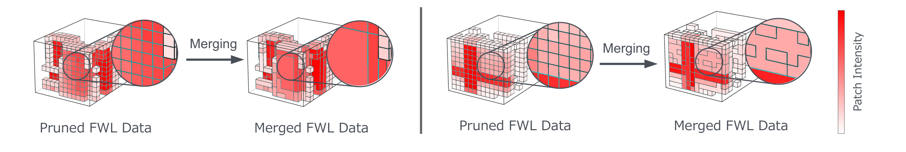
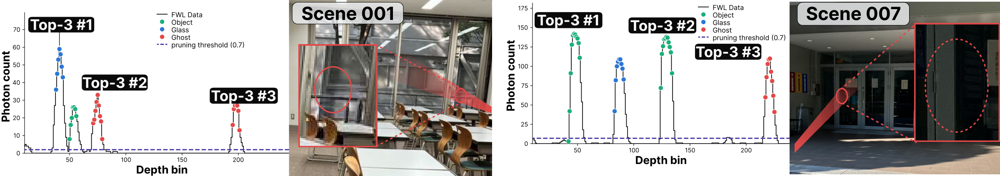
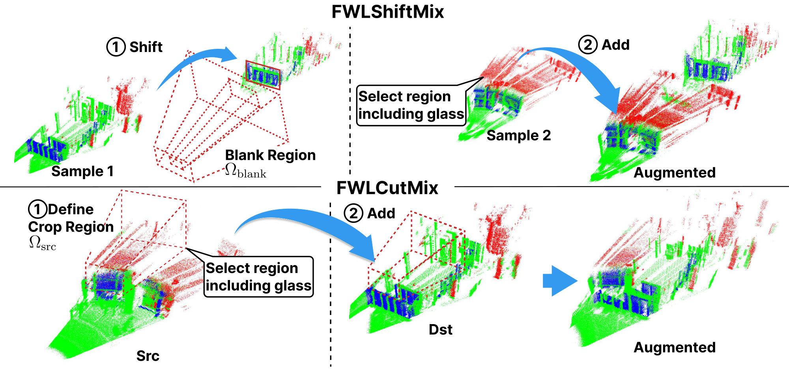
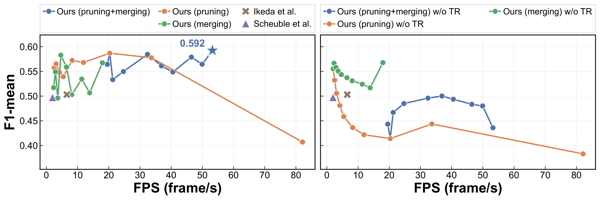
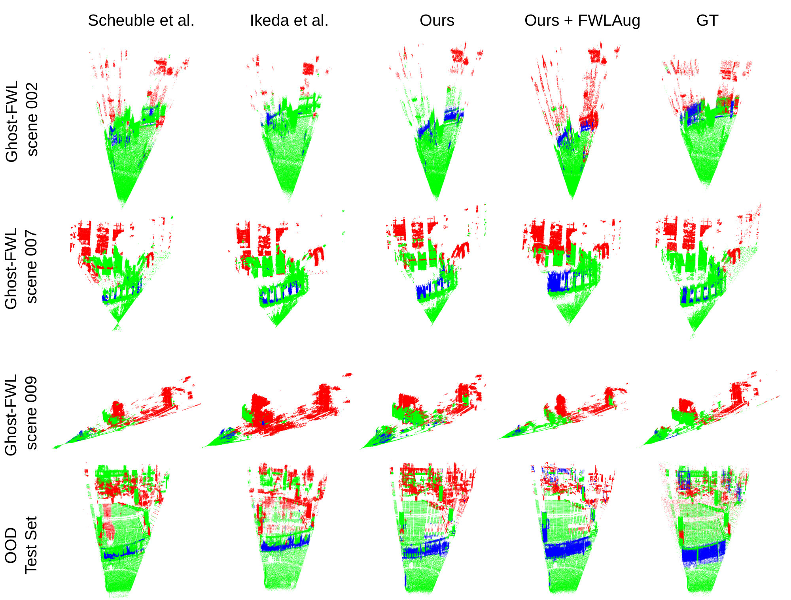
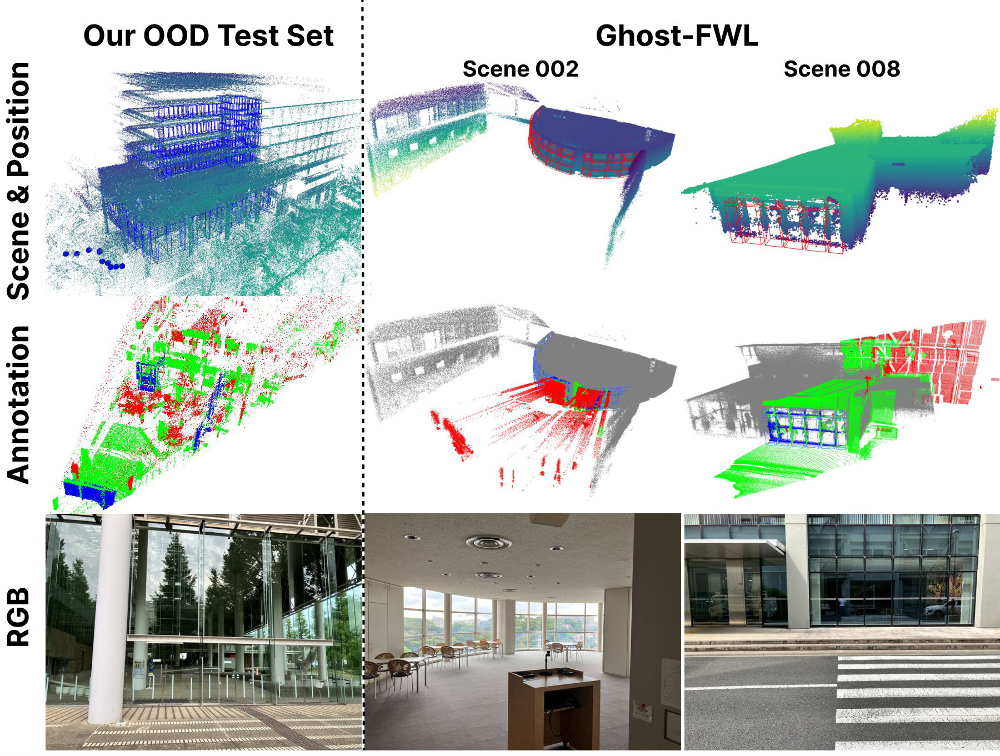

Towards Real-Time Full-Waveform LiDAR Transformers via Intensity-Guided Token Reduction and Physics-Aware Augmentation
Abstract
LiDAR is a critical sensor for autonomous driving and robotics, yet it remains vulnerable to adverse conditions such as fog, rain, transparent objects, and low-reflectance surfaces. Full-waveform LiDAR (FWL) addresses these limitations by capturing the complete return waveform as a histogram, preserving rich reflection characteristics including multi-path echoes and weak signals. While recent Transformer-based approaches have demonstrated promise on FWL data, two fundamental bottlenecks remain: high computational cost from redundant tokens in low-intensity background regions, and limited generalization due to scarce annotated training data.
We address both bottlenecks by exploiting the physical structure inherent to FWL data. First, we propose FWL-ToPM, a token pruning and merging mechanism that leverages intensity distributions to selectively reduce tokens while retaining critical waveform content. Second, we introduce FWLAug, a data augmentation framework designed as a regularization method that preserves waveform structure, retaining the Time-of-Flight waveform of each ray and the frustum geometry, to improve generalization to unseen scenes. Evaluated on the Ghost-FWL benchmark, FWL-ToPM achieves over 8× speedup at real-time throughput alongside a nearly 9-point F1 gain over the prior state of the art, establishing the first real-time FWL Transformer that simultaneously improves accuracy. FWLAug further improves performance on both the standard benchmark and an out-of-distribution test set of unseen scenes. Together, these methods push FWL-based perception toward practical deployment.
Contributions
- FWL-ToPM, a token pruning and merging mechanism tailored to FWL data. It prunes low-intensity background tokens and merges the remainder, achieving an 8× speedup (53.2 FPS) and an F1-mean improvement from 0.503 to 0.592: the first real-time FWL Transformer.
- A finding that runs against image Transformers: pruning up to 70% of tokens consistently improves FWL Transformer accuracy, because removing low-intensity background lets the model focus on object-relevant signals.
- FWLAug, a data augmentation framework for FWL data that expands training diversity while preserving the ToF waveform structure and frustum geometry that standard image and point cloud augmentations violate.
- An out-of-distribution (OOD) test set captured entirely outside the Ghost-FWL recording locations, on which FWLAug achieves the best F1-mean among all compared configurations.
FWL-ToPM: Intensity-Guided Token Pruning and Merging
Unlike camera images, FWL data contains spatially sparse, high-intensity peaks, while most of the volume is low-intensity signal that contributes little to recognition. Uniform ViT tokenization therefore produces many uninformative tokens: computation is wasted on them, and they dilute the important high-intensity regions. Token reduction methods designed for images assume that information is spread across the 2D plane, so they are a poor fit for FWL.
Intensity-Based Pruning
Each 3D patch is scored by its maximum signal intensity. The lowest-scoring fraction ρlow of patches is removed before tokenization, and only the remaining high-intensity patches are fed to the encoder. Pruned regions are excluded from the loss during training and predicted as Noise at inference. Pruning changes only which tokens are processed, not the weights, so it can be applied to a pretrained model without retraining.
Sparse-Aware Token Merging
After pruning, the remaining tokens form a sparse and irregular subset of the 3D patch grid, where grid-based destination-token sampling breaks down because many regions contain no tokens at all. We serialize the surviving tokens along a space-filling curve (Morton order), which keeps spatially close patches close in the 1D sequence. We then pick destination tokens at equal intervals along that sequence, so they are spread across the 3D volume. Source tokens are merged into their most similar destination token (cosine similarity) before self-attention, and unmerged afterward to stay consistent with the residual connections.

Token merging on real Ghost-FWL scenes. Color indicates patch intensity (red: high, white: low). After low-intensity background tokens are pruned, similar source tokens are merged into destination tokens. The token count drops, while the merged tokens keep the spatial structure of reflected objects.

Why patch-level pruning instead of Top-K peaks? Waveforms along single rays in Ghost-FWL Scene 001 (left) and Scene 007 (right). Conventional multi-return LiDAR keeps only the Top-3 peaks, discarding an Object return (Scene 001) and a Glass return (Scene 007) when strong Ghost returns are on the same ray. Both returns lie above our pruning threshold (dashed line), so FWL-ToPM keeps them along with their full waveforms.
FWLAug: Physics-Aware Augmentation
Each per-pixel histogram in an FWL frame encodes the temporal response of one laser ray, and together the rays form a frustum with the LiDAR at its apex. Any FWL augmentation must therefore (1) preserve the waveform of each ray along the time axis and (2) stay consistent with the frustum geometry. Standard image and point cloud augmentations violate both. FWLAug is designed as a regularizer that respects these constraints. It increases training diversity and the frequency of minority classes such as glass, but it does not attempt to simulate full light transport.
- FWLShiftMix shifts objects along their LiDAR ray directions by Δd ∼ U(−3, 15) m, shifting each waveform along the ToF axis. It then fills the resulting blank region with complete waveforms from a glass-containing region of another scene, rather than leaving unrealistic zeros.
- FWLCutMix extends CutMix to FWL. It crops a region from a source frame, preferring one that contains a minority class (glass), and pastes the entire temporal waveform of each pixel into a destination frame.

Illustration of FWLAug. FWLShiftMix (top): an object in Sample 1 is shifted away from the LiDAR, creating a blank region Ωblank, which is filled with a glass-containing region Ωsrc from Sample 2. FWLCutMix (bottom): a crop region containing glass is selected from a source frame and pasted into a destination frame. Both methods favor glass-containing regions to reduce class imbalance.
Results
Accuracy and Speed
FWL-ToPM reaches an F1-mean of 0.592 at 53.2 FPS: about 9 points more accurate and more than 8× faster than prior FWL Transformers. Our pruning and merging each outperform their image-based counterparts (DynamicViT and ToMe) on their own, and combining them gives the best F1–FPS trade-off. Pruning alone keeps high accuracy up to about 20 FPS, and merging alone limits accuracy loss but tops out around 18 FPS. Combined, they exceed 50 FPS without losing accuracy.
| Method | Pruning | Merging | F1-mean ↑ | FPS ↑ |
|---|---|---|---|---|
| Scheuble et al. (ICCV 2025) | – | – | 0.497 | 1.97 |
| Ikeda et al. (CVPR 2026) | – | – | 0.503 | 6.54 |
| Ours w/o FWL-ToPM | – | – | 0.555 | 2.01 |
| DynamicViT | ✓ | – | 0.480 | 20.0 |
| Ours w/ Pruning | ✓ | – | 0.591 | 20.3 |
| ToMe | – | ✓ | 0.543 | 5.24 |
| Ours w/ Merging | – | ✓ | 0.565 | 18.0 |
| Ours w/ FWL-ToPM | ✓ | ✓ | 0.592 | 53.2 |

(Left) F1-mean vs. FPS trade-off for all compared methods. (Right) F1-mean and FPS when pruning and merging are applied to a pretrained model without additional training (w/o TR). ρlow and ρm are varied from 0 to 0.9. For pruning+merging, ρlow is fixed to 0.7 while ρm varies. Without retraining, merging alone keeps F1-mean above 0.5 up to about 20 FPS.
Generalization with FWLAug
Full FWLAug improves OOD F1-mean by 4.6 points over the baseline and Glass F1 by 8.4 points, showing better generalization to unseen scenes. FWLShiftMix contributes most to in-distribution accuracy, while the combination of both augmentations drives the OOD improvement.
| Method | FWLCutMix | FWLShiftMix | Ghost-FWL | OOD Test | ||
|---|---|---|---|---|---|---|
| F1-mean | Glass | F1-mean | Glass | |||
| Ours w/o Aug | ✗ | ✗ | 0.592 | 0.352 | 0.406 | 0.491 |
| Ours w/ FWLAug | ✗ | ✓ | 0.622 | 0.376 | 0.425 | 0.494 |
| Ours w/ FWLAug | ✓ | ✓ | 0.617 | 0.385 | 0.452 | 0.575 |
| Ours w/ FWLAug | ✓ | ✗ | 0.586 | 0.315 | 0.434 | 0.606 |
Qualitative Results
Red, green, and blue indicate Ghost, Object, and Glass, respectively. Our model classifies Glass and Ghost regions more accurately than prior FWL methods, especially where Object and Ghost overlap and on glass surfaces that produce only weak peaks. Glass behind other glass remains difficult. FWLAug partially improves these under-represented configurations.

Qualitative comparison on Ghost-FWL test scenes 002, 007, 009 and on our OOD test set.
OOD Test Set
To evaluate generalization to unseen scenes, we built a new FWL test set at a location entirely separate from Ghost-FWL. The data were collected with the same FWL sensor platform and acquisition configuration as Ghost-FWL and annotated with the same protocol (Ghost, Object, Glass, Noise). As a result, the evaluation isolates changes in scene distribution from changes in hardware or labeling.
- 500 frames from 10 viewpoints (50 frames each), captured outdoors in daytime.
- A seven-story building clad in glass on all four sides, with additional glass around elevators and connecting corridors: over 300 glass windows in total.
- Includes scenes with multiple spatially separated glass regions, a configuration not present in Ghost-FWL.
The OOD test set will be released publicly.

Our OOD test set (left) compared with Ghost-FWL scenes (right). Annotations: Ghost (red), Object (green), Glass (blue), Noise. Blue markers show the LiDAR positions during acquisition. The RGB images show the capture locations.
Acknowledgements
We gratefully acknowledge Takahiro Kado, Ibuki Fujioka, and Taro Beppu at Sony Semiconductor Solutions for their generous support and for providing the Sony LiDAR sensor used in this work. The Sony LiDAR system played an essential role in enabling this research.
BibTeX
@inproceedings{oishi2026fwltopm,
author = {Oishi, Kotaro and Ikeda, Kazuma and Hara, Ryosei and Yoshida, Ryo and Isogawa, Mariko and Yoshioka, Kentaro},
title = {Towards Real-Time Full-Waveform LiDAR Transformers via Intensity-Guided Token Reduction and Physics-Aware Augmentation},
booktitle = {Advances in Neural Information Processing Systems (NeurIPS)},
year = {2026}
}